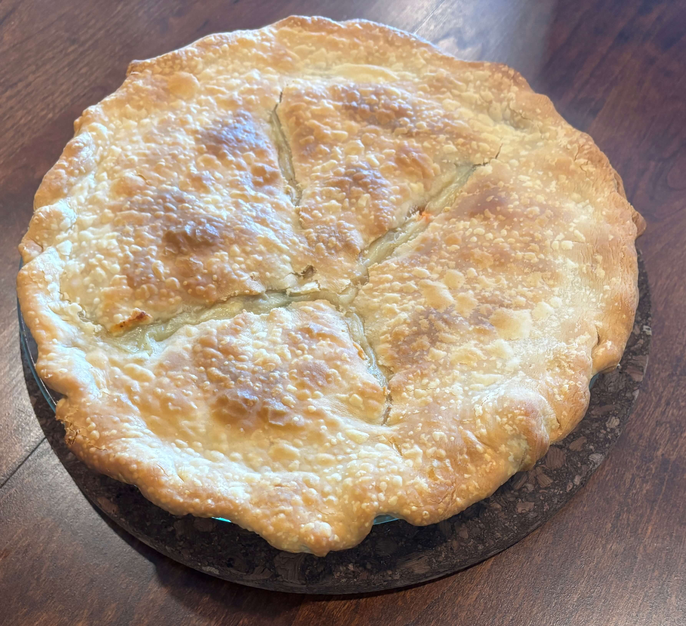

Home
Chicken Pot Pie

6 servings
1 hr 5 min
Ingredients
- 1 box (14.1 oz) refrigerated Pie Crusts (2 Count), softened as directed on box
- 1/3 cup butter or margarine
- 1/3 cup chopped onion
- 1/3 cup all-purpose flour
- 1/2 teaspoon salt
- 1/4 teaspoon pepper
- 1 3/4 cups from 1 carton Progresso™ Classic Chicken Broth
- 1/2 cup milk
- 2 1/2 cups shredded cooked chicken or turkey
- 2 cups frozen mixed vegetables, thawed
- A standard 9-inch glass pie plate works best for this recipe.
Steps
- Bring crusts to room temperature by removing outer package and placing on your counter for 15 minutes. Heat oven to 425°F.
- Place 1 pie crust in ungreased 9-inch glass pie plate. Press crust firmly against side and bottom, allowing any extra crust to hang over the edge.
- In 2-quart saucepan, melt butter over medium heat. Add onion; cook 2 minutes, stirring frequently, until tender.
- Stir in flour, salt, and pepper until well blended.
- Gradually stir in broth and milk, cooking and stirring until bubbly and thickened.
- Stir in chicken and mixed vegetables until thoroughly combined. Remove from heat.
- Spoon chicken mixture into crust-lined pie plate.
- Place second crust over the chicken mixture. Fold excess top crust under the edge of the bottom crust, pressing edges together to seal and create a thick rim.
- Flute the edge of the pie crust by placing your thumb and index finger about 1 inch apart on the outside edge. With your other thumb, push the pastry toward the outside to form a scalloped edge.
- With a small knife, cut slits or shapes in several places in top crust to allow steam to escape while baking.
- Bake 15 minutes. Then cover edge of crust with foil to prevent excessive browning.
- Bake an additional 15 to 25 minutes or until the top crust is golden brown and filling is at least 165°F. Let stand 5 minutes before serving.